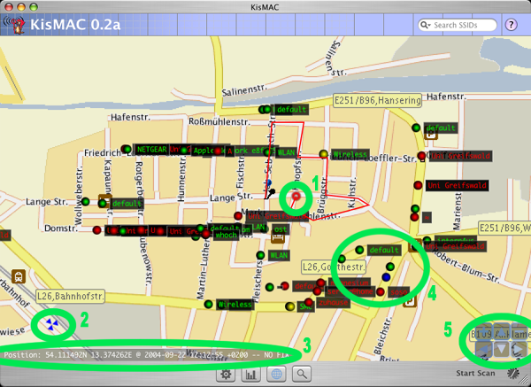

| KisMAC Manual - The Map View |
KisMAC's internal map support

In order to use KisMACs mapping support, you will need to get maps first. You can do this by either importing images (eg. scanned maps) or you can tell KisMAC to import maps from an internet server. The advantage of the internet servers is that at least in the cases of Map24 and Expedia no alignment has to take place. Please be aware that the servers only have maps for specific areas of the world. You can of course also share stored kismap files with friends.
- Your current position is shown in a growing and shrinking circle. You can enable and disable this feature in the map menu. The red line, which follows the circle is your trace. It will be automatically stored in kismac files.
- In order to align maps you will need to set two waypoints, which look like three triangles. Map24 and Expedia maps are automatically aligned.
- In the lower left corner you can see the current status of your GPS device.
- Networks will show up as dots. The SSID (if available) is shown on the right side. The colors reflect the encryption state of the network.
- Green - unprotected
- Yellow - unknown
- Red - WEP enabled
- Blue - WPA detected
- Cyan - LEAP enabled
- The control panel in the lower right corner allows navigation in the map. You can also use the respective keys on your keyboard (arrow keys/+/-).
| back | Tell me more |